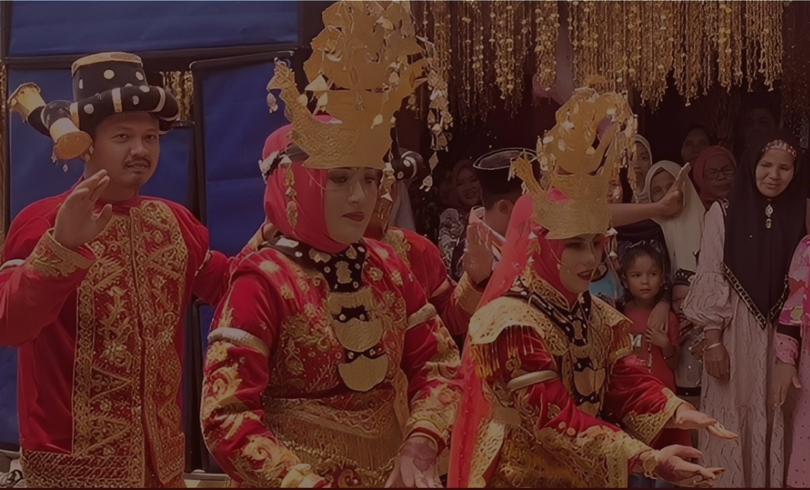
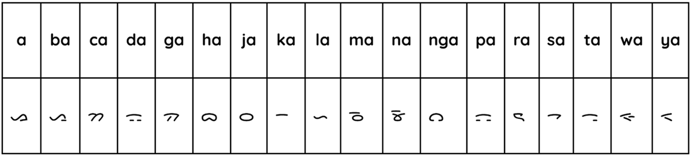

Aksara Batak Mandailing adalah varian aksara Batak yang digunakan oleh masyarakat Batak Mandailing di wilayah Tapanuli Selatan, Sumatera Utara, dan sebagian wilayah Sumatera Barat. Sama seperti aksara Batak lainnya, sistem tulis ini berasal dari turunan aksara Brahmi yang dibawa melalui pengaruh India kuno dan perdagangan internasional.
Aksara ini pernah digunakan untuk menulis surat pribadi, teks adat, catatan silsilah (tarombo), dan juga doa atau mantra. Bentuk hurufnya mirip dengan aksara Batak Angkola (yang merupakan dialek dekat Mandailing), tetapi memiliki ciri khas pada beberapa huruf seperti pa, ha, dan ja. Kini, aksara Batak Mandailing jarang digunakan dalam kehidupan sehari-hari, tetapi tetap dilestarikan melalui buku, media digital, dan pembelajaran budaya.
(setiap huruf dibaca dengan vokal “a” jika tidak diberi tanda diakritik)

Aksara Batak Mandailing termasuk aksara silabis, artinya satu huruf dasar mewakili konsonan + vokal “a”. Untuk mengubah vokal atau mematikan huruf, digunakan anak ni surat (tanda diakritik):
Meskipun aturan dasarnya sama, masyarakat Pakpak memiliki pengucapan khas yang berbeda dari Toba atau Mandailing, sehingga pembelajar perlu memperhatikan perbedaan bunyi.
Tulis dalam suku kata Latin
Sa-hat | ma | hi-ta
Gabungkan menjadi kalimat utuh
ᯎᯅᯏ᯲ ᯉ ᯅᯪᯏ
Ubah setiap suku kata menjadi huruf dasar + diakritik
Hasil Akhir & Artinya
ᯎ = sa
ᯅᯏ᯲ = hat
ᯉ = ma
ᯅᯪ = hi
ᯏ = ta
Semoga kita selamat
Ungkapan doa yang sering diucapkan dalam konteks adat Mandailing, baik saat bepergian maupun acara penting.Terima kasih telah mengikuti kuis Aksara Batak!